Таро
タロ
Молочный баббл ти
Таро
Чай эрл грей, таро, молоко, тапиока и сырная пенка
390 ₽500 / 700 мл
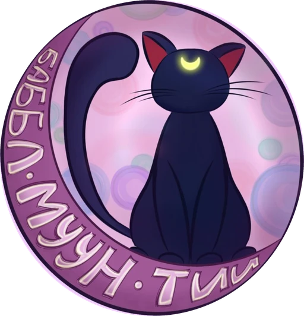
Баббл Муун ТииЕжедневно 08:00–20:00Баббл ти · Саратов
Тапиока в карамельном сиропе, молочный чай, лимонады с джус боллами и авторский кофе. Заходите за стаканом — и за «той самой» атмосферой.
5,0 ★★★★★ · 53 отзыва на Яндекс Картах
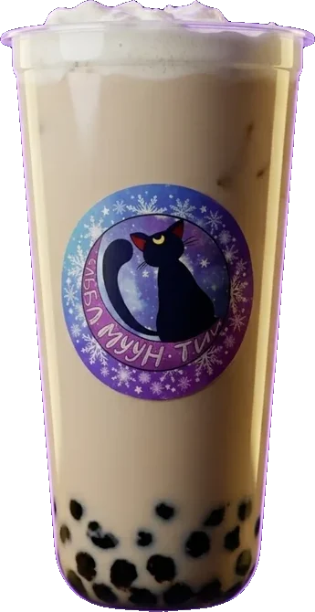
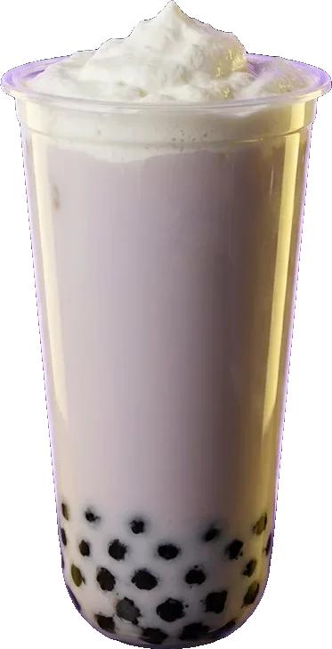
Хиты Муун Тии
01 / 05
Таро
タロ
Молочный баббл ти
Чай эрл грей, таро, молоко, тапиока и сырная пенка
390 ₽500 / 700 мл
Баббл
ミルクティー
Фирменный стакан
Девять вкусов: орео, улун солёная карамель, голубая матча, сомей ёсино…
от 390 ₽500 / 700 мл
Фрукты
フルーツティー
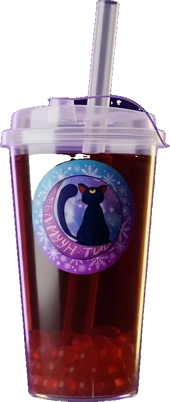
На каркаде и жасмине
Малиновый, вишнёвый, жасмин с киви или яблоком — и шарики тапиоки
от 350 ₽500 / 700 мл
Лимонад
レモネード
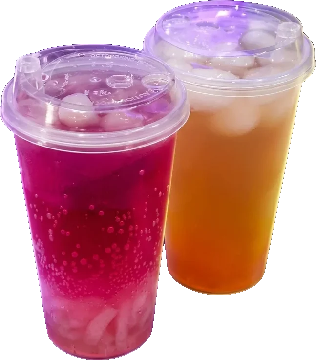
С джус боллами
Сакура роза, лавандовый, дыня манго, клубника маракуйя — восемь вкусов
от 300 ₽500 / 700 мл
Круассан
クロワッサン
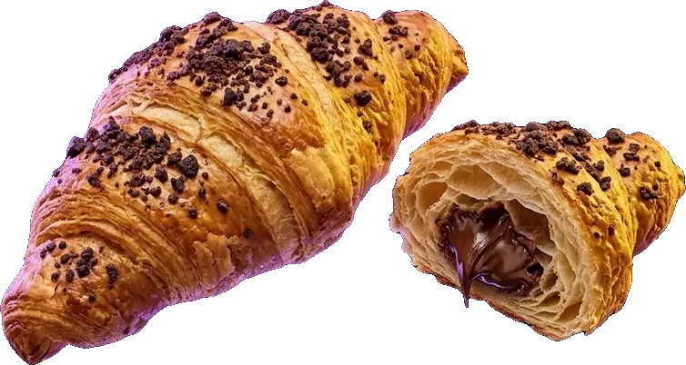
К напитку
С шоколадом или с ветчиной и сыром — уточняйте наличие у бариста
к любому напитку
Почти все напитки — с тапиокой. Объём выбираете сами, топпинги добавим по желанию.
Цены по меню в кофейне. Актуальные цены и наличие уточняйте у бариста.
Неон, космос на окнах и стакан, который хочется сфотографировать. Листайте →
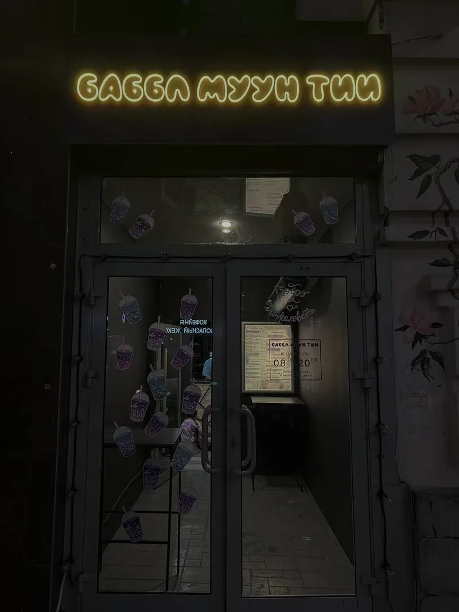
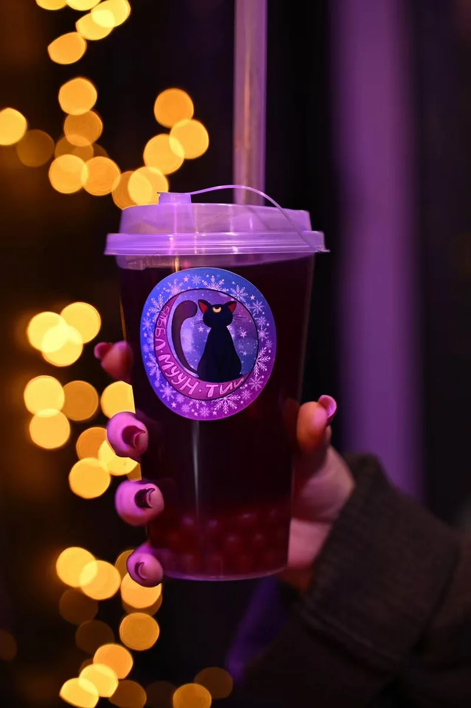
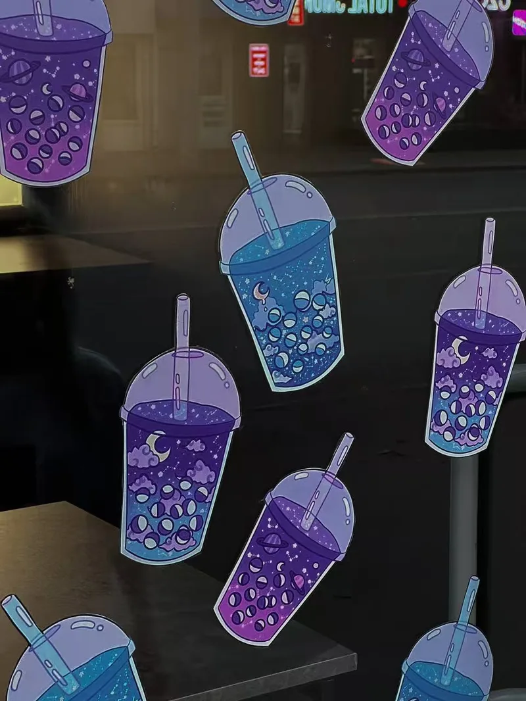
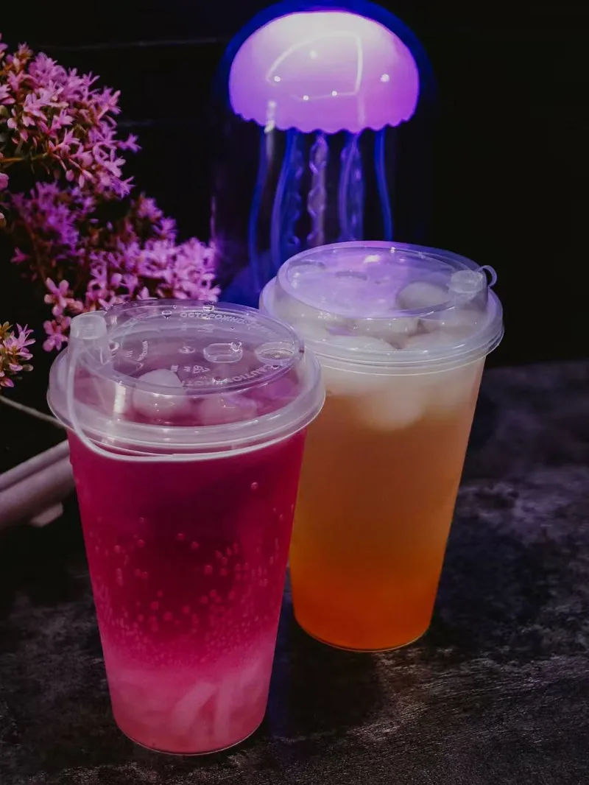
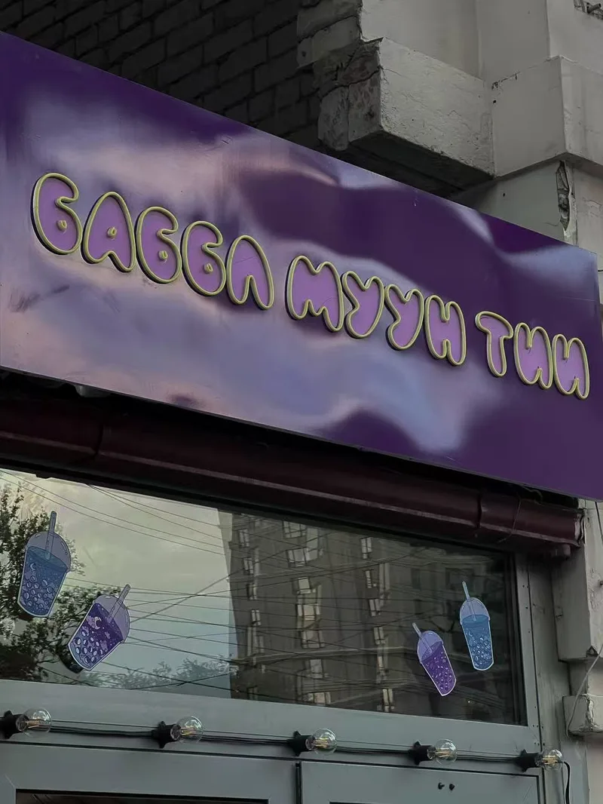
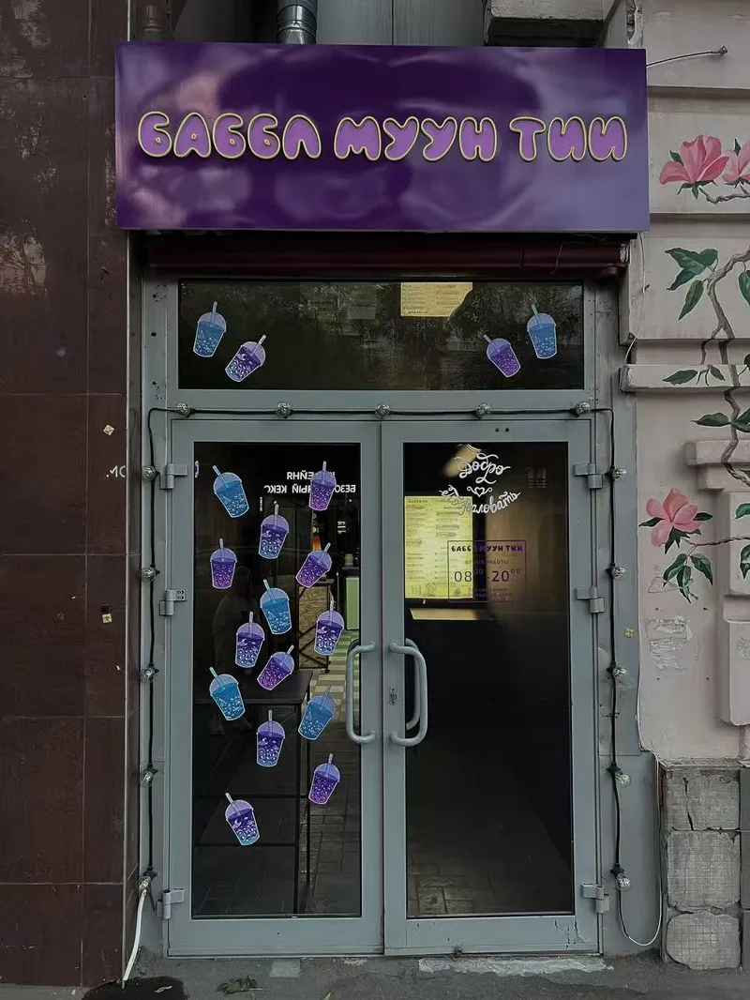
Часы работы
Ежедневно
08:00 – 20:00
Без перерыва и выходных